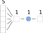
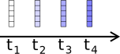
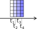
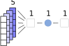

Spiking neurons in PyTorch
Contents
Spiking neurons in PyTorch¶
Norse is a library where you can simulate neural networks that are driven by atomic and sparse events over time, rather than large and dense tensors without time.
This notebook shows you how how to install and use PyTorch and Norse. We will skip most of the details, and we will not cover training. Many more resources exist in our notebook repository if you’re feeling adventurous. Also, our documentation tells you much more about what Norse is and why we built it at: https://norse.github.io/norse/
Note
You can execute the notebooks on this website by hitting above and pressing Live Code.
Table of contents¶
Using PyTorch
Installation
Creating a data and a network
Applying data to the network
Using Norse
Creating temporal data
Creating a spiking network
Applying data to the network
Next steps
1. Using PyTorch¶
1.1 Installing prerequisites¶
Before we can get started, we need to install the necessary software. But! That’s simple. Just run the cell below.
!pip install --quiet norse
Now that it’s installed, we can import PyTorch and Norse directly into Python.
import torch
import norse.torch as norse
# We set the random seed for reproducibility
_ = torch.manual_seed(0)
1.2.1 Creating data with PyTorch¶
First, we need some data. Let’s start by creating a vector of 5 random numbers, that can be visualized like this.
data = torch.randn(5)
data
tensor([ 1.5410, -0.2934, -2.1788, 0.5684, -1.0845])
1.2.2 Creating a network¶
We will now create a simple neural network in PyTorch, consisting of a Linear layer and an activation function. The Linear layer combines the five inputs into a single output, like so:
The activation activation function determines how the neurons react to the data. For now, we will just use a simple rectified linear unit (ReLU), which clips data data to the interval \([0, \inf)\). If the data is below 0, the activation function returns 0. If the data is above zero, ReLU returns that same data without change (identity).
Now that we installed the ReLU activation function, our network looks like this:
Finally, we need to put the two layers together by wrapping them in a torch.nn.Sequential module.
network = torch.nn.Sequential(
torch.nn.Linear(5, 1),
torch.nn.ReLU()
)
Together, our data and network now looks like this:

1.3 Using the network¶
It’s now straight forward to give the network our data. That will give us a single number as output, but with any negative numbers zero’ed out because the ReLU layer removes them.
network(data)
tensor([0.], grad_fn=<ReluBackward0>)
Try to run the cell multiple times - you should get the same result. Why? Because the input never changes. So, what happens if the input changes?
Below, we’ll use the network again, but with a different input vector. Try running it several times. Do you understand what is happening? Why is it sometimes zero?
data = torch.rand(5)
network(data)
tensor([0.0756], grad_fn=<ReluBackward0>)
2. Using Norse¶
Now that we’ve seen how to use networks and data in PyTorch, we can extend the same principle to Norse. But before we do that, we need to discuss time.
Neurons in biology receive data more than that single vector we used above. They exist in time and have intricate dynamics. What you see below is a small animation of a constant input that produces different outputs over time.

2.1 Describing “time”¶
In order to simulate our neuron over time we need be able to express “time”. There are many ways to approach this and in Norse, this is approached by discretizing time into small bins. That is, “time” in Norse is not continuous. It consists of small “steps” that are very very small (1ms by default).
Practically speaking, we can approach this by creating multiple versions of our data vector. Each “version” would then represent one timestep, like in the above simulation.

One way to represent that would be to create a single matrix, where each “slice” represents a timesteps.

In PyTorch, we can create such a matrix by adding four timesteps as the outer dimension.
data = torch.randn(4, 5)
data
tensor([[ 1.8530, 0.4681, -0.1577, 1.4437, 0.2596],
[-0.1740, -0.6787, 0.9383, 0.4889, -0.6731],
[ 0.8728, 1.0554, -0.0048, -0.5181, -0.3067],
[-1.5810, 1.7066, -0.4462, 0.7440, 1.5210]])
2.2 Creating a spiking network¶
As you remember, the ReLU function isn’t spiking or even biological. That’s where Norse comes in. Norse includes spiking neuron models that we can add directly into the previous network description. In this case, we’ll use a leaky integrate-and-fire (LIF) model.
network = norse.SequentialState(
torch.nn.Linear(5, 1),
norse.LIF()
)
You probably noticed that we are no longer using the torch.nn.Sequential but norse.SequentialState. The reason is that every time we feed in one timestep, we also need to remember how “excited” the neuron is. This is also known as the state of the neuron. torch.nn.Sequential doesn’t know anything about states, so we need to patch it. We will ignore this for now, but you are welcome to read more about state handling in our documentation.
With time, our network can be visualized like this:

Note the two changes: the are using several input data vectors and the ReLU activation function is replaced with a LIF activation function.
2.3 Applying data to the network¶
Applying the data is as simple as we did above. We would now expect that for each timestep, we would get a single output in return (just as before). Because we have four timesteps, we would expect 4 numbers:
output, _ = network(data) # We ignore the state for now, see above
output
tensor([[0.],
[0.],
[0.],
[0.]], grad_fn=<StackBackward0>)
As promised, here are exactly the four values we would expect.
Before we conclude, we encourage you to play around with the data above. Here are some leading questions
How do you simulate the network for 10 timesteps?
How do you increase the number of neurons from 1 to 2?
What happens if you add a linear layer in the end that goes from 1 to 3 neurons?
3 Next steps¶
You may wonder why the data above are all zeros. Take a look at this animation.
If the input is too low (like in the left panel), nothing will happen: the neuron stays silent. If we want the network to provide a certain output we need to train it. That is the topic for future notebooks and documentation. Specifically, we would recommend these notebooks
How to train a single spiking neuron with Norse:

How to work with state and time in Norse
How to work with event-based datasets with Tonic:
Much more informtion can be found in our notebooks and the Norse documentation. Good luck!